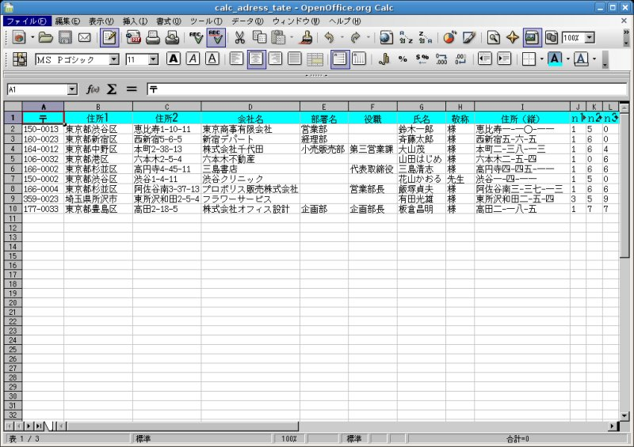
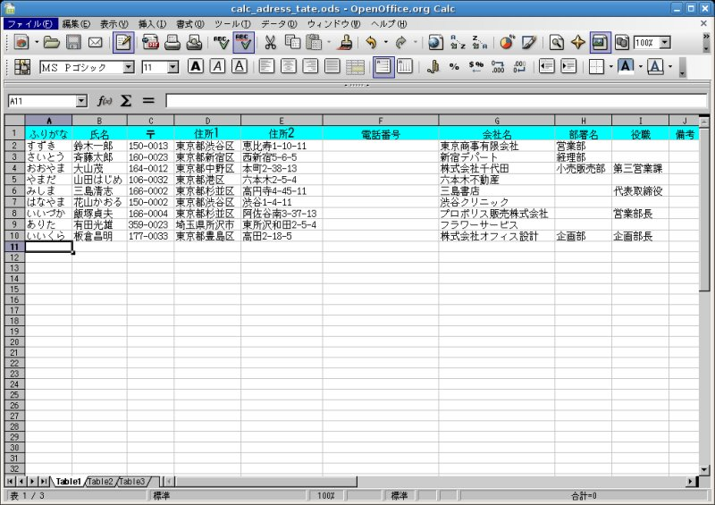

HOME / OpenOffice / AddressBook
はがきの宛名印刷に対応できる、汎用的な住所録の作成方法を紹介します。
OpenOffice.org
公式サイトで配布中の住所録テンプレートを入手します。
入手先：http://ja.openoffice.org/documents/tips/archives/tategaki.lzh
ダウンロードしたファイル tategaki.lzh
を解凍ツールで展開します。最近のたいていのディストリビューションでは、マウスでダブルクリックすれば書庫マネージャが自動解凍しま
す。
そのうちの calc_adress_tate.sxc が住所録テンプレートです。

上記サイトでダウンロードしたテンプレートは
.sxc形式なので、オープンドキュメント形式へ変換します。オープンドキュメント形式へ変換することで、OpenOffice.org
2.0 の全ての機能が利用可能になります。
メニューより [ファイル]＞[名前を付けて保存]＞[OpenDocument?
の表計算ドキュメント(.ods)]＞[保存]
追加すると便利な項目には、次のようなものが挙げられるでしょう。
郵便番号（〒）と住所2
の項目は、このテンプレートに含まれている計算式により、はがきの宛名印刷で利用するためのものなので、変更しないでおきます。
その他の既存の項目は任意に変更することができます。
Calc の編集機能を使って、項目（列）の移動が自由にできます。列の切り取り・貼り付けが使えます。計算式は自動修正されるので、項目を移動し ても影響しませ ん。
氏名の項目を左端へ移動すると見易くなります。
Calc では３つのテーブル（table）が標準で含まれています。これは、Exel でいうシート(sheet)に対応しています。したがって、テーブルの追加も容易に行なえます。
上記までの項目で自分用の住所録の体裁が完成したら、テーブルを追加することでそれを活用します。下記は完成した住所録（その一例）で す。

上記作業手順が一切不要となるよう、テンプレート（ファイル名：addressbook_template.ods）を用意しました。
この住所録テンプレート（カスタマイズ版）がダ ウンロードできます。ダウンロードした後、OpenOffice.org で開けば直ぐ使い始めることが可能です。このテンプレートには計算式を500行目まで含めてあります。したがって、項目のある第一行目を 除き、499件の データ登録が無修正のままで行なえます。
逐一追加した住所録データは、後でそれぞれの項目にしたがって自由に並び変えが出来ます。たとえば、
データの並び替えの操作は、メニューの [データ]＞[並び替え] より操作します。
関連項目 OpenOffice/GreetingCard 2を 見てください。
OpenOffice.Calc で作成した住所録は、標準では .ods または .sxc形式で保存されます。他の宛名作成や年賀状作成ソフトで直接取り込めるように、汎用的なCSV形式に変換します。変換は次の手順 で行なえます。
データベース機能を存分に活用するには、OpenOffice.org Base を使います。大量のデータを登録し、データの任意抽出・検索機能を活用したいという向きでは、データベースを利用する方がより適していま す。次のリンクを 参照してください。